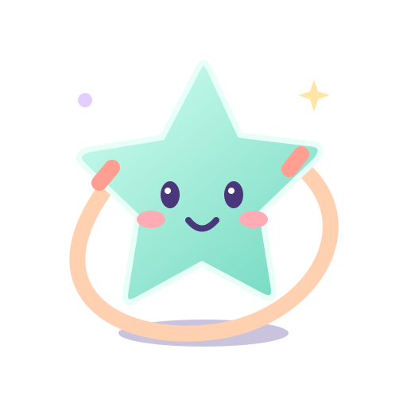

從五顆星開始
先收集五顆星，再按自己的節奏挑戰10、20或50跳。也可以去自由星空，不設終點，想跳就跳。
每一次努力，都有回應
跳一跳，聽見音樂和鼓勵，看星星、音符與小慶祝陪著你。喜歡輕柔一點，還是熱鬧一點，都可以選。
準備好了，再繼續
累了隨時暫停，已收集的星星還在。準備好後重新站穩，就能接著玩。

先收集五顆星，再按自己的節奏挑戰10、20或50跳。也可以去自由星空，不設終點，想跳就跳。
跳一跳，聽見音樂和鼓勵，看星星、音符與小慶祝陪著你。喜歡輕柔一點，還是熱鬧一點，都可以選。
累了隨時暫停，已收集的星星還在。準備好後重新站穩，就能接著玩。